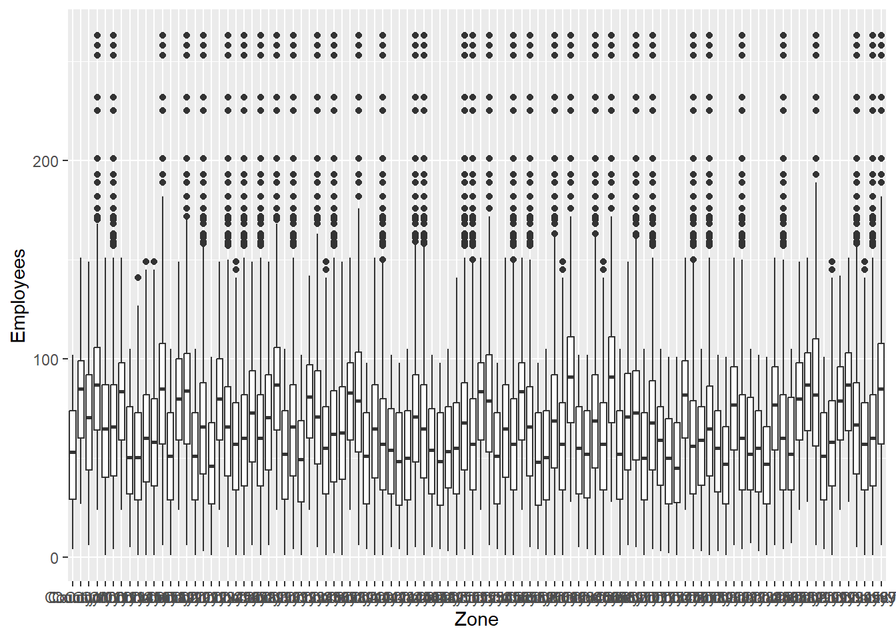
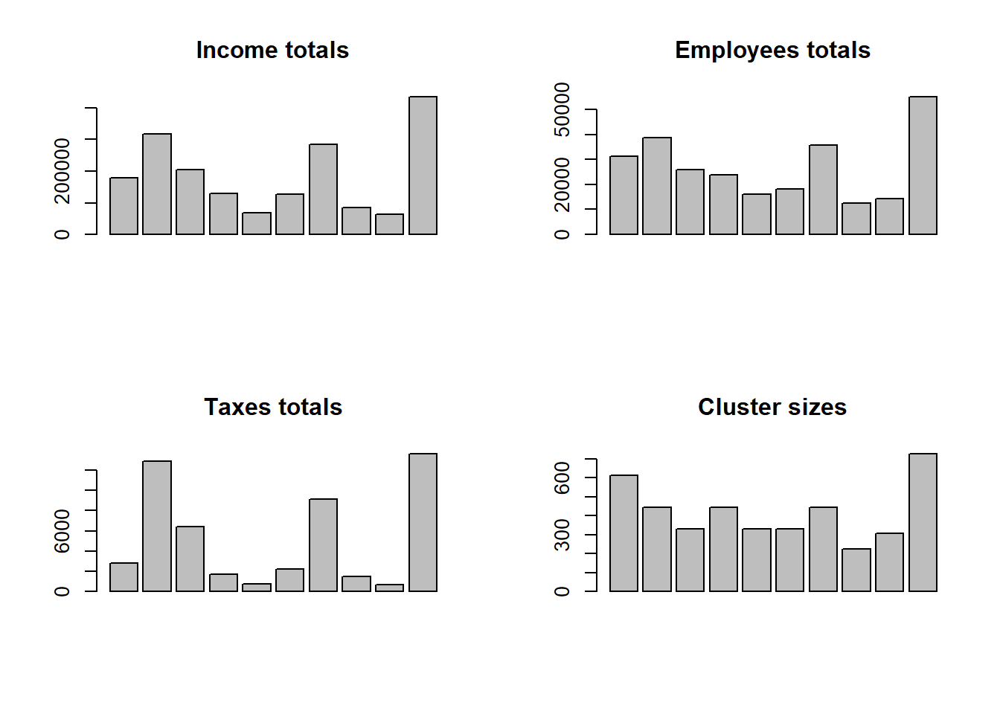

In complex surveys, population groups of elements that form naturally, such as neighborhoods, municipalities, or schools, can be treated as sampling units. These types of sampling schemes help increase sample size while keeping survey costs under control.
Sampling strategies for elements have a common denominator: the sampling frame and its thorough identification and location of all population elements, each and every one of them. It is worth noting that, in practice, sampling designs that select samples of elements directly are not very common. This is due more to financial and logistical issues than to problems of statistical efficiency. Consider the following: every study requires a sampling frame. Thousands upon thousands of studies are conducted each year, and there should be as many sampling frames as studies conducted. For logistical reasons, obtaining a sampling frame of elements is very costly because it would imply carrying out a census, enumerating, identifying, and locating each population element; this is, of course, utopian.
Thinking of the simplest sampling design, the financial cost of carrying out a study through a simple random sampling design is very high. For example, suppose the goal is to carry out a study to evaluate the quality of life of people in a certain country. If a sampling frame of elements existed, drawing a simple random sample would require hiring one interviewer for each surveyed person, because the natural geographic dispersion of the elements selected in the simple random sample would be too high.
In the previous case, even if a sampling frame of elements were available, the financial cost of drawing a random sample would be too high. One way to draw probability samples when a sampling frame of elements is not available is to select clusters1 of elements and carry out the measurement process in each cluster. Cochran (1977) argues that, for logistical reasons, it is more efficient to select a sample of 20 household blocks, each block with 30 households, than to select a random sample of 600 households. In the first case, only one interviewer would be needed per block, whereas in the second, many more interviewers would possibly be needed.
Whenever one wants to select a probability sample, a sampling frame is mandatory; in cases where there is no sampling frame, it is necessary to build one. However, the financial and logistical cost of building a sampling frame for elements is very high in most cases. One way to build low-cost sampling frames is through the application of a cluster sampling design. These clusters have the advantage of being groupings of elements that form naturally, and there are also government entities responsible for recording and updating the list of existing clusters in each sector. For example, one entity is responsible for updating a city’s cartographic sectors, another for updating businesses in a sector, another compiles information on the location of schools, and so on. For each entity there is also a register of these groupings, and this will be the sampling frame used in the design stage.
Therefore, the sampling frame will contain the location and identification of each cluster of elements existing in the population. With this cluster frame, a sampling design is applied and a sample is selected. Each cluster selected in the sample is visited, and the measurement process is carried out for all elements belonging to it. Thus, if the selected cluster is a cartographic section of the city, the survey will be applied to each and every element that makes up the section. If the selected cluster is a school, the measurement instrument will be applied to each and every student in the school. In other words, a census is carried out in each cluster selected in the sample.
Of course, there is a significant gain in operational, logistical, and financial terms. However, this gain has a price… the price to pay is expressed in terms of the statistical efficiency of the sampling strategy. Reviewing the clustering process a little, it must be kept in mind that clusters of elements tend, in most cases, to be homogeneous with respect to the values of the characteristic of interest \(y\). This occurs because the grouping happens naturally; that is, households, cartographic sections, villages, schools, prisons, and so on tend to form naturally and homogeneously. Thus, the loss of statistical efficiency is caused by the cluster effect that comes with selecting homogeneous units that do not contain new information but, in a sense, repeated information. What new information about the population is obtained by adding a new element from the same cluster to the sample?
The larger the subsample size within the clusters, the larger the design effect will be. If, within each cluster, the behavior of the characteristic of interest \(y\) reflected its structural behavior in the population, then the efficiency of a cluster sampling strategy would be similar to that of a simple random sample. But in practice, the internal homogeneity of clusters increases sampling error. An unfortunately frequent error among novice researchers is to analyze a cluster sample as if it were a simple random sample2.
In general, the following comments apply to cluster sampling: - We use cluster sampling if: - Building a sampling frame of elements is very difficult, very costly, or impossible. Enumerating bees, enumerating clients, listing trees in a sector, listing households in clustered neighborhoods (geographic dispersion, cost reduction). - The target population is very dispersed geographically or appears in natural groupings: families, schools, and so on. - The individual elements of a population participate in the sample only if they belong to a cluster included in the sample. - Stratified sampling increases the precision of estimates, while cluster sampling tends to decrease it. This is a price paid for not having a defined sampling frame for the elements of the target population. - When obtaining a sample of elements that belong to a cluster, we repeat the cluster’s information (given the natural grouping). Ideally, new information should be obtained from each individual; for this reason, precision is lost in the estimates.
6.1 Theoretical foundations and notation
Suppose that the population of elements
\[
U=\{1,...,k,...,N\}.
\]
is divided into \(N_I\) population subgroups, called clusters and denoted as \(U_I=\{U_1,\ldots,U_{N_I}\}\).
The population of clusters will be given, without loss of generality, by
\[
U_I=\{1,\dots,N_I\}.
\]
These define a partition of the population in such a way that - \(U=\bigcup_{i=1}^{N_I}U_i\) - \(U_i \bigcap U_j = \emptyset\) para todo \(i\neq j\)
The number of units \(N_i\) in the \(i\)-th cluster is called the cluster size, such that
\[
N=\sum_{i=1}^{N_I}N_i,
\]
where \(N\) is the size of population \(U\). With the population divided into \(N_I\) clusters, the population parameters of interest can be written as: - The population total,
where \(\bar{y}_i=\dfrac{1}{N_i}\sum_{k\in U_i}y_k\) is the mean of the \(i\)-th cluster.
The general scheme of the cluster sampling design is defined as follows - Select a probability sample \(s_I\)3 of clusters from population \(U_I\) using a sampling design such that
where $Q_I$ is the support containing all possible samples of clusters.
Each and every element belonging to the selected clusters is observed and measured.
The size of the random sample of clusters is given by - \(n(S_I)=n_I\) if the sample is fixed-size, and \(n(S_I)\) if the sample is variable-size. - \(n(S_I)=m_I\) if the sample is selected with replacement.
If it is possible to construct or define a support \(Q_I\), it will also be possible to define, at least theoretically, a general support \(Q\) of elements containing the possible samples of elements belonging to the selected clusters.
NoteExample
Our example population \(U\), given by
\(U=\{Yves, Ken, Erik, Sharon, Leslie\}\)
is divided into three clusters as follows
\(U_1=\{Yves, Ken\}\)
the second composed of
\(U_2=\{Erik,Sharon\}\)
and the last cluster given by
\(U_3=\{Leslie\}\)
It is clear that, in this particular case, there are \(N_I=3\) clusters of different sizes. In this way, the population of clusters is defined by
\(U_I=\{U_1, U_2, U_3\}\)
Suppose that a sample \(s_I\) of clusters of size \(n_I=2\) is selected. The definition of the support \(Q_I\) in R is made by using the Support function from the TeachingSampling package, applied to cluster-level information as follows.
Note that in the general cluster sampling scheme, a sampling design is used to select the clusters in the sample. This sampling design \(p_I(s_I)\) can be any of the designs seen in previous chapters, applied this time not to the selection of elements, but to the selection of clusters. In general, given the support \(Q_I\), \(p_I(s_I)\) can be: - Without replacement: if all possible samples in \(Q_I\) are without replacement. Simple random sampling, Bernoulli, systematic, Poisson, \(\pi\)PS, or simple stratified sampling. - With replacement: if all possible samples in \(Q_I\) are with replacement. Simple random sampling with replacement or PPS sampling. - Fixed-size: if all possible samples in \(Q\) have the same sample size \(n(S_I)=n_I\).
Note that the sampling design \(p_I(s_I)\) induces inclusion probabilities over the clusters, which are defined as follows.
ImportantDefinition
The inclusion probability of the \(i\)-th cluster is given by
whereas the inclusion probability of the \(i\)-th and \(j\)-th clusters is given by
\[
\pi_{Iij}=Pr(i\in S_I\text{ and }j\in S_I)=\sum_{s_I \ni \text{ $i$ and $j$}} p_I(s_I).
\]
respectively. Of course, \(\pi_{Iii}=\pi_{Ii}\).
Likewise, because of the hierarchical nature of the grouping of elements in clusters, the following result shows the inclusion probabilities at the level of the population elements.
TipResult
The probability that the \(k\)-th element is included in sample \(S\) is given by
\[
\pi_{k}=\pi_{Ii} \ \ \ \text{if $k\in U_i$}
\]
On the other hand, the inclusion probability of the \(k\)-th and \(l\)-th elements is given by
Once the inclusion probabilities are defined, the sampling strategy is defined through the use of the Horvitz-Thompson estimator, given by the following result.
TipResult
Under a cluster sampling design, the Horvitz-Thompson estimator for the total \(t_{y}\), its variance, and its estimated variance are given by
respectively, with \(\Delta_{Iij}=\pi_{Iij}-\pi_{Ii}\pi_{Ij}\) and \(t_{yi}\) the total of the selected \(i\)-th cluster. Note that \(\hat{t}_{y,\pi}\) is unbiased for \(t_y\) and that \(\widehat{Var}_1(\hat{t}_{y,\pi})\) is unbiased for \(Var_1(\hat{t}_{y,\pi})\).
Note that \(\widehat{Var}_2(\hat{t}_{y,\pi})\) is unbiased for \(Var_2(\hat{t}_{y,\pi})\).
Proof.
The proof of the preceding results is immediate by following the lines of the section on the Horvitz-Thompson estimator in Chapter 2 and noting that \(t_y=\sum_{U_I}t_{yi}\).
Regarding the construction of the Horvitz-Thompson estimator under cluster sampling, Bautista (1998) deduces that - The efficiency of the sampling strategy takes its maximum value when the values \(\dfrac{t_{yi}}{\pi_{Ii}}\) are constant for every \(i=1,\ldots,N_I\). - When the cluster design assigns identical inclusion probabilities to each cluster, the strategy loses efficiency unless the behavior of the totals of each cluster is similar.
The preceding comments lead us to prefer sampling designs that assign inclusion probabilities proportional to cluster size. For this, continuous auxiliary information should be available for the entire population \(U_I\) and should be well correlated with the totals of the characteristic of interest in each cluster \(t_{yi}\). In other words, our sampling frame is a cluster frame; therefore, if \(x\) represents the continuous auxiliary information and \(t_{xi}\) the total of the auxiliary information in the \(i\)-th cluster, the correlation between \(t_{xi}\) and \(t_{yi}\) should be quite strong, and the inclusion probabilities of the clusters should correspond to
Through the following lexical-graphic exercise, the unbiasedness of the Horvitz-Thompson estimator is verified in R. For this, we use the Ik and Pik functions from the TeachingSampling package at the cluster level.
p <-c(0.5, 0.4, 0.1)Ind <-Ik(NI, nI)data.frame(QI, p, Ind)
X1 X2 p X1.1 X2.1 X3
1 U1 U2 0.5 1 1 0
2 U1 U3 0.4 1 0 1
3 U2 U3 0.1 0 1 1
pikI <-Pik(p, Ind)pikI
[,1] [,2] [,3]
[1,] 0.9 0.6 0.5
In this way, the highest inclusion probability belongs to cluster \(U_1\), and the lowest corresponds to cluster \(U_3\). With this, we can calculate the estimate using the HT function from the TeachingSampling package.
One of the reasons cluster sampling is used is the lack of a sampling frame for elements. In this case, not knowing the population size is very typical. However, using the principles of the Horvitz-Thompson estimator, it is possible to estimate the population size by writing it as
\[
N=\sum_{i\in U_I} N_i,
\]
Then, we have the following result.
TipResult
In cluster sampling, the population size is estimated unbiasedly using the following expression
In fact, on some occasions, when the sampling design used induces unequal inclusion probabilities, it is better to use this estimator even when the population size is known.
6.1.2 The Hansen-Hurwitz estimator
If the selection of clusters is carried out with replacement, either using a simple random sampling design with replacement or, when continuous auxiliary information is available at the cluster level, using a PPS sampling design, it is possible to use the principles of the Hansen-Hurwitz estimator to complete the sampling strategy.
If continuous auxiliary information is available, the selection probability of the \(i\)-th cluster would be given by
\[
p_{Ii}=\frac{t_{xi}}{t_x}
\]
Sampath (2001) states that if the sizes \(N_i\) of each cluster \(i=1,\ldots,N_I\) are known, these can be used as size measures to develop a sampling plan with proportional probabilities. The general scheme of sampling with replacement takes the following form: - For each cluster in population \(U_I\), there are positive numbers \(p_{I1},\ldots,p_{IN_I}\) such that
\[
\sum_{U_I}p_{Ii}=1.
\]
These probabilities are not necessarily equal. - To select the first element that will belong to the sample of size \(m_I\), a random draw is carried out in such a way that
\[
Pr(\text{Select cluster }i)=p_{Ii},\text{ $i \in U_I$}.
\] - The selected cluster is replaced in the population and again becomes part of the next random draw with the same selection probability. In total, \(m_I\) independent random draws are carried out.
Note that the random draw is carried out among clusters, not among elements; therefore, under cluster sampling it does not make sense to speak of the selection probability of an element. Once the selection probabilities of the clusters are defined, we use the Hansen-Hurwitz estimator to estimate the parameters of interest.
TipResult
Under a cluster sampling design, the Hansen-Hurwitz estimator for the total \(t_{y}\), its variance, and its estimated variance are given by
respectively. Note that \(\hat{t}_{y,p}\) is unbiased for \(t_y\) and that \(\widehat{Var}(\hat{t}_{y,p})\) is unbiased for \(Var(\hat{t}_{y,p})\).
Proof.
The proof of the result follows the same arguments as the section on the Hansen-Hurwitz estimator in Chapter 2 and Result 2.2.11, defining the random variable \(Z_v\) as
Cochran (1977) states that the method of selecting samples with replacement is equivalent to the standard probability problem in which \(m_I\) balls are placed into \(N_I\) boxes; the probability that a ball is placed in the \(i\)-th box is given by \(Z_v\) on each occasion. In this way, the joint distribution of \(n_{Ii}(s_I)\) is given by a multinomial expression.
ImportantDefinition
In general, a sampling design with replacement of clusters is defined as
Suppose that a sample \(s_I\) of clusters with replacement of size \(m_I=2\) is selected using a sampling design that assigns the following selection probabilities to each cluster.
To select a sample with replacement from population \(U_I\) of size \(mI=2\) clusters, the sample function is used, whose replace argument must be equal to TRUE. For this, we define the selection probabilities of each cluster.
In this particular case, the sample with replacement is composed of \(U_3\) and, as expected because it has the highest selection probability, \(U_1\). To estimate the population total, we use the HH function from the TeachingSampling package with the totals of the selected clusters and their respective selection probabilities.
tyIm <- tyI[samI]tyIm
[1] 66 135
pIim <- pIi[samI]data.frame(mI, pIim, tyIm)
mI pIim tyIm
1 U1 0.80 66
2 U2 0.15 135
HH(tyIm, pIim)[1]
[1] 491
6.2 Simple random sampling of clusters
This section introduces the principles of the cluster sampling design under the simplest sampling plan. The sample \(s_I\) of \(n_I\) clusters is selected using a simple random sampling design without replacement. As will be seen throughout the section, there are no new principles, either in the sampling design or in the development of the estimator, involved in constructing the sampling strategy; the proof of the results follows the guidelines presented in Chapter 2.
This sampling design assumes that the behavior of the total of the characteristic of interest is constant in each cluster. In practice, this situation occurs very rarely, which is why this design loses precision, in most cases, compared with simple random sampling. For this sampling design to be more efficient, the average value of the characteristic of interest in each cluster \(\bar{y}_{U_i}\) should be proportional to \(\frac{c}{N_i}\). It is assumed that population \(U_I\) is divided into \(N_I\) clusters, not necessarily of the same size. The sample without replacement is selected according to the sampling design given in the following definition.
ImportantDefinition
A sampling design is said to be simple random for clusters if all possible samples of size \(n_I\) have the same probability of being selected. Thus,
Once the cluster sample \(s_I\) is selected, a complete enumeration and the corresponding measurement and observation of each and every element belonging to each selected cluster are carried out.
6.2.1 Selection algorithms
When selecting samples of clusters without replacement, it is possible to use the sampling algorithms given in Chapter 2, so the following steps must be carried out: - Separate the population into \(N_I\) clusters using the cluster sampling frame. - Select \(n_I\) clusters using any of the methods presented in Section 3.2.1; that is, the negative coordination method or the Fan-Muller-Rezucha method.
6.2.2 The Horvitz-Thompson estimator
Following Result 6.1.1, the inclusion probabilities are given by the following result.
TipResult
For a cluster random sampling design, the first- and second-order inclusion probabilities of the clusters are given by
It follows from Result 6.1.2 that the sampling strategy is constructed using the Horvitz-Thompson estimator, which under this particular sampling design takes the form of the following result.
TipResult
For a cluster random sampling design, the Horvitz-Thompson estimator of the population total \(t_y\), its variance, and its estimated variance are given by
respectively, with \(S^2_{t_{yU_I}}\) and \(S^2_{t_{ys_I}}\) the variance estimator of the cluster totals for the characteristic of interest in universe \(U_I\) and in sample \(s_I\). That is,
where \(\bar{t}_{U_I}=\sum_{i=1}^{N_I}t_{yi}/N_I\), and \(S^2_{t_{yS_I}}\) is defined analogously. Note that \(\hat{t}_{y,\pi}\) is unbiased for the population total \(t_y\) of the characteristic of interest \(y\), and that \(\widehat{Var}_{CS}(\hat{t}_{y,\pi})\) is unbiased for \(Var_{CS}(\hat{t}_{y,\pi})\).
Note that the systematic sampling design is a special case of cluster random sampling when a sample \(s_I\) of size equal to \(n_I=1\) is selected. As in systematic sampling, there is no variance estimator when only one cluster is selected.
NoteExample
Continuing with our example population \(U_I\), there are \(\binom{N_I}{m_I}=\binom{3}{2}=3\) possible samples of size \(m_I=2\). Carry out the lexical-graphic calculation of the Horvitz-Thompson estimator and verify unbiasedness and the variance using this sampling design.
6.2.2.1 Sample size
Under cluster random sampling, the same principles of sample size estimation used in simple random sampling are applied, replacing the corresponding quantities from the population of elements with those from the population of clusters \(U_I\). Thus, if the sample size must be estimated for a given absolute precision \(c\), we have:
with \(n_{I0}=\dfrac{t^2_{1-\alpha/2,N_I-1}CV^2}{k^2}\). Note that because the population of clusters is small, in most cases it is preferable to assume that the estimator follows a Student’s t distribution with \(N_I-1\) degrees of freedom.
6.2.3 Efficiency of the strategy
Throughout the chapter, it has been mentioned that the efficiency of this sampling strategy is lower than that of simple random sampling without replacement. Intuitively, it is suspected that, because group formation occurs naturally in most cases, the information in the clusters, with respect to the structural behavior of the characteristic of interest, is homogeneous within each of them.
To corroborate the preceding statements, we will measure the efficiency of the strategy using the design effect. However, to unify the sample size in this strategy, assume that: - Population \(U_I\) consists of \(N_I\) clusters. - Each cluster has size \(M\). Thus, \(\#U_i=M \ \ \ i=1,\ldots,N_I\), and the population of elements \(U\) has size \(N=M\times N_I\). - A sample \(s_I\) of size equal to \(n_I\) clusters is selected. In this way, \(M\times n_I\) elements have been selected in the sample.
Table 6.2: ANOVA table induced by cluster random sampling.
The results can be made comparable by assuming that a sample of \(n_I\) clusters is selected according to a simple random cluster design. On the other hand, suppose that a sample of \(M\times n_I\) elements is selected directly from population \(U\). Whenever the population is divided into population subgroups, it is very useful to use the analysis of variance table, which this time takes the form given in table 6.2.
TipResult
Using the results of the decomposition of the sums of squares, the variance of the cluster strategy takes the following form
whereas the variance of the simple random strategy, with population size equal to \(N=M\times N_I\) elements and sample size equal to \(n=M\times n_I\) elements, can be written as
where \(\bar{y}_{U_i}\) and \(t_{yi}\) are the mean and total of the \(i\)-th cluster, respectively, and \(\bar{t}_{yU_I}=\frac{\sum_{i=1}^{N_I}t_{yi}}{N_I}\) is the average of the cluster totals.
For the variance of the simple random strategy, it is enough to note that
Note that if \(SSB\) is high, then the strategy will be less efficient. In practice, this is exactly what occurs because, given the natural grouping of elements, the behavior of the characteristic of interest will be similar within each cluster. Therefore, \(SSB\) will be high because clusters will generally exhibit heterogeneous behavior. To see this more clearly, the intraclass correlation coefficient is defined as
\[
\rho=1-\frac{M}{M-1}\frac{SSW}{SST}
\]
This measure takes positive values if the elements within the clusters have similar behavior, and negative values when the behavior of the elements within the clusters is highly dispersed. In addition, the coefficient indicates how similar the elements within the clusters are and provides a measure of homogeneity within clusters, giving us a more detailed view of the design effect and efficiency loss in cluster random sampling, as stated in the following result.
TipResult
The design effect in cluster random sampling is given by
The approximation holds if \(N_I\), the total number of clusters, is assumed to be large such that
\[
M(N_I-1)\cong MN_I-1
\]
The proof is completed by noting that, when taking the ratio of variances, as in the section on systematic sampling, we have
\[
\frac{SSB}{SST}=\frac{1+(M-1)\rho}{M}
\]
Because \(\rho\) is generally positive5, we can infer from (equation 6.1) that cluster sampling will have a larger variance than simple random sampling of elements directly from population \(U\). However, it is plausible to sacrifice statistical efficiency for the financial and logistical savings characteristic of cluster strategies. Now, if \(\rho\) is negative, this strategy gains in efficiency and also in operating costs.
Lohr (2000) states that in the very common practical case where clusters are not of the same size, an alternative measure to \(\rho\) is the coefficient of determination \(R^2\), defined as
\[
R^2=1-\frac{MSW}{s^2_{y_U}}
\]
where \(MSW=\frac{SSW}{N-N_I}\), with \(N\) the total number of elements in population \(U\). This is a well-known measure used in linear regression analysis and is interpreted as the amount of variability explained by the means of each cluster. If the behavior of the characteristic of interest is homogeneous within clusters, then the means among clusters will have very high dispersion relative to the variation within clusters, and \(R^2\) will take large values.
6.2.4 Marco I and Lucy
The common denominator of the practical applications with Marco and Lucy in the previous chapters has been the a priori identification and location of each firm in the industrial sector. This has been possible because a sampling frame of elements was available. On some occasions, the available sampling frame had advantages that allowed the incorporation of auxiliary information, whether continuous or categorical, to improve the efficiency of the sampling strategy used in each case.
In any case, the government wants to obtain precise estimates that allow it to strengthen its support and financing policies for firms in the industrial sector. However, the government is not in a position to provide a list of all firms in the industrial sector with their respective identification and location because confidentiality policies do not allow it to provide this type of information. Therefore, on this occasion there is no such generous frame of elements in the population, and the study must be carried out under this logistical restriction.
In any sampling study, there must always be, if not physically then at least implicitly, a sampling frame of the population that allows the target sampling unit to be measured. Since the government does not allow the use of a sampling frame of firms in the industrial sector, a cluster sampling frame that groups these firms must be constructed. One solution, widely used in practice, is geographic area sampling. Firms, dwellings, residences, businesses, and so on are located somewhere on the map, and it is not very feasible for them to move from where they have been established. Therefore, an area sampling frame is a good logistical solution for addressing the design stage of this study.
One difficulty that arises when conducting cluster sampling with a frame disaggregated into geographic areas is the impossibility of knowing how many firms will be located in each geographic zone. However, it is possible to assign subdivisions of each selected geographic zone to a group of interviewers so that they can travel through the zone and apply the questionnaire to each firm in the sector. In this way, it is possible to obtain an estimate of the required budget. The cluster population \(U_I\), that is, the city, is divided into five geographic zones, namely: Zone A, located in the south; Zone B, located in the north; Zone C, located in the east; Zone D, located in the west; and Zone E, located in the center.
Recalling the objectives of the study, the government wants to measure the growth of the industrial sector in the city through three important characteristics: income and taxes declared in the last fiscal year, and job creation through the number of workers employed in each firm. Surely neither income, taxes, nor the number of employees is correlated with geographic zone. We can state this because the location of firms is carried out by the government following various criteria.
qplot(Zone, Employees, data = BigLucy, geom =c("boxplot"))

Figure 6.1: Boxplot of the characteristic of interest Employees for each zone.
Thus, within the same geographic zone, it is possible to find a large firm surrounded by small or medium firms. This is a very good sign in the sampling design stage because it means that the behavior of the characteristics of interest within each geographic area is highly dispersed. figure 6.1 presents the behavior of the characteristics of interest in each of the five geographic zones of the city. Note that it is not possible to identify significantly different structural behavior in each zone; on the contrary, the behavior is heterogeneous within each zone and homogeneous across zones.
Although the number of firms in the industrial sector is not known, the government has estimated, based on data from previous years, the existence of 85000 firms for the last fiscal year. With this information, it has been decided to select a simple random sample of clusters of size \(n_I=10\). Therefore, the expected sample size of firms corresponds to \(85000\dfrac{10}{100}=8500\). From the population of \(N_I=100\) area clusters, a simple random sample of \(n_I=10\) is selected using the S.SI function from the TeachingSampling package. In this particular case, the clusters included in the sample without replacement correspond to Zone A and Zone E.
An interviewer team proceeds to collect information from each firm belonging to the selected clusters; the operating plan is more efficient the more interviewers are hired for each selected cluster. When the measurement process ends, there are two data sets, each containing the value of the characteristics of interest for each firm in the area, corresponding to Zone A and Zone E.
With the rbind function, it is possible to join the information from the geographic zones selected in the sample. With the help of the T.SIC(y,C) function from the TeachingSampling package, it is possible to obtain the totals of the characteristics of interest in each cluster. The arguments of this function are y, the data set (a single variable or a set of variables) from the census in each cluster, and C, a variable indicating the membership of the element, in this case the firms, in the cluster. The result of the function is the total number of elements in each cluster, as well as the total of the characteristics of interest in each cluster. In this particular case, the sample size of firms is \(307 + 165= 472\). Note that, as in the estimation cases of previous chapters, a data set of the characteristics of interest is created, defined by target_variables <- data.frame(Income, Employees, Taxes).
The effective sample size was 4199. Once the totals for each geographic zone are available, the E.SI(NI,nI,y) function from the TeachingSampling package, defined in Chapter 2, is used to obtain the estimates of the parameters of interest.
E.SI(NI, nI, cluster_estimate_variables)
The estimation results are shown in the following table. It should be noted that the efficiency of this sampling strategy is much lower than that of a strategy using a simple random sampling design. Note that the relative deviation is much larger.
Table 6.3: Estimates for the simple random cluster sampling design.
N
Ni
Income
Employees
Taxes
Estimation
100
41990
18972520
2718810
516920
Standard Error
0
4580
3663012
398456
151013
CVE
0
11
19
15
29
DEFF
NaN
1
1
1
1
It is clear that the results of this sampling strategy are not satisfactory, at least for estimating the parameters of interest Income and Taxes. The explanation for the deficiency of this strategy is immediate when analyzing the following graph, which shows the structural behavior of the totals in the clusters.
par(mfrow =c(2, 2))barplot(cluster_estimate_variables$Income, main ="Income totals")barplot(cluster_estimate_variables$Employees, main ="Employees totals")barplot(cluster_estimate_variables$Taxes, main ="Taxes totals")barplot(cluster_estimate_variables$Ni, main ="Cluster sizes")

Figure 6.2: Boxplot of the characteristics of interest at each industrial level.
It is notable how different the behavior of the totals is in each cluster for the Income and Employees characteristics. However, the behavior is similar for the Taxes characteristic. It is interesting to observe that the greater the dissimilarity among cluster totals, the greater the relative deviation in the estimate. As stated in the introduction to this chapter, this sampling strategy is inefficient in cases where the totals of each cluster are not correlated with the inclusion probabilities at the cluster level. Observing the graph, it is established that Taxes is the only characteristic that presents stable behavior in relation to the clusters.
The golden rule remains: a sampling strategy is efficient if the inclusion probabilities are correlated with the values of the characteristic of interest, in this case with the totals of each cluster.
6.3 Exercises
Argue whether the following statements are false or true. Support your answer in detail.
In a cluster sampling design, there is always a sampling frame of population elements.
In a cluster sampling design, when estimating a total, greater precision is obtained if the selection or inclusion probabilities are proportional to the totals of the characteristic of interest in the clusters.
In a cluster sampling design, when estimating a total, greater precision is obtained if the selection or inclusion probabilities are proportional to the characteristic of interest of the elements in the clusters.
In estimating population totals, it is observed that, almost always, \(Var_{SRSCS}(t_{y,\pi})\) is greater than \(Var_{SRS}(t_{y,\pi})\).
In a simple random cluster sampling design with unequal sizes, there is a significant increase in the variance compared with a simple random cluster sampling design with equal sizes.
In a PPS sampling design of clusters with unequal sizes (with probability proportional to cluster size), there is a significant decrease in the variance compared with a simple random cluster sampling design with unequal sizes.
Suppose that the objective of a survey is to estimate mean income in a neighborhood of the city. Assume that in that neighborhood there are \(N_I=60\) blocks. A simple random cluster sampling design is carried out and \(n_I=5\) blocks are selected, in which all households are interviewed. The survey results are given in table 6.4
Table 6.4: Table of the five selected blocks: exercise 6.2
Block ID
Households in the block
Total income in the block
AW45
120
25000
AW02
100
24000
AW31
80
19000
AW28
95
20100
AW44
80
18000
Estimate the total household income in the neighborhood. Report the estimated coefficient of variation.
Estimate the number of households in the neighborhood. Report the estimated coefficient of variation.
Assuming that there are \(N=2000\) households in the neighborhood, estimate the mean household income in the neighborhood. Report the estimated coefficient of variation.
Estimate the mean income using the Hájek estimator. Explain the difference with respect to the estimate from the previous item.
How to cite this book
Gutiérrez, A. (2027). Sampling strategies: Survey design and parameter estimation. Unpublished version online.
Bautista, J. L. 1998. Diseños de Muestreo Estad’istico. Universidad Nacional de Colombia.
Cochran, W. 1977. Sampling Techniques. Wiley.
Hájek, J. 1971. “Comment on an Essay on the Logical Foundations of Survey Sampling, Part One.”The Foundations of Survey Sampling, Godambe, V.P. and Sprott, D.A. eds., 236, Holt, Rinehart, and Winston.
Lehtonen, R., and E. J. Pahkinen. 2003. Practial Methods for Design and Analysis of Complex Surveys. 2nd ed. New York: Wiley.
Lohr, S. 2000. Sampling: Design and Analysis. Thompson.
Sampath, S. 2001. Sampling Theory and Methods. Narosa Publishing House.
It is neither prudent nor correct to analyze a cluster sample as if it were a simple random sample, because the standard errors will be larger and the interpretation of the results will be incorrect.↩︎
Note that if \(s_I\) represents the realized sample of clusters, then \(S_I\) represents the random sample, which is a random variable.↩︎
Because cluster sizes generally vary, \(n(S)\) is generally random even if \(n(S_I)\) is fixed-size.↩︎
This occurs because clusters are formed physically and geographically as contiguous groupings of elements that share a natural environment, so the behavior of the elements internally will be similar.↩︎